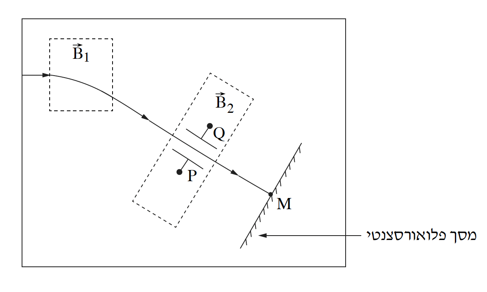

שאלה 5
בתרשים שלפניכם מתואר מסלול תנועה של אלומת פרוטונים עד לפגיעתה במסך פלואורסצנטי, שבו נוצרת נקודת אור. בדרכה אל המסך האלומה עוברת דרך שני אזורים שבהם שוררים שדות שונים.
בתחילת המסלול האלומה נכנסת במהירות שגודלה v = 106 m/s לאזור שבו שורר שדה מגנטי אחיד B1 שעוצמתו 0.12T וכיוונו ניצב למישור הדף. כיוון המהירות מאונך לכיוון השדה המגנטי. אלומת הפרוטונים יוצאת מן האזור שבו שורר השדה המגנטי בזווית כלשהי ביחס לכיוון כניסתה (ראו תרשים).
בדרכה אל המסך, האלומה עוברת בין שני לוחות מתכת מקבילים P ו-Q המחוברים לספק מתח. בין שני הלוחות שוררים שדה חשמלי אחיד E ושדה מגנטי אחיד B2. האלומה עוברת בין שני הלוחות בלי לשנות את כיוונה, והיא ממשיכה לנוע בקו ישר עד שהיא פוגעת במסך בנקודה M. המסך ניצב לכיוון מסלול התנועה של אלומת הפרוטונים ביציאתה מן השדה המגנטי B1.
המערכת כולה נמצאת בתא מרוקן מאוויר. בשאלה כולה יש להזניח את כוח הכבידה.

קבעו מהו הכיוון של השדה המגנטי B1 - לתוך הדף או החוצה מן הדף.
חשבו את רדיוס מסלול התנועה של הפרוטונים באזור שבו שורר השדה B1.
(8 נקודות)
נתון: הפרש הפוטנציאלים בין הלוחות המקבילים P ו-Q הוא ΔV = 800V, והמרחק בין הלוחות הוא Δx = 5cm.
כיוון השדה המגנטי B2 זהה לכיוון השדה המגנטי B1.
חשבו את הגודל של השדה החשמלי E בין שני הלוחות, וציינו מהו כיוונו - מן הלוח P ללוח Q או להיפך. (8 נקודות)
חשבו את הגודל של השדה המגנטי B2. (8 נקודות)
מפסיקים את פעולת השדה המגנטי B2, ובעקבות זאת אלומת הפרוטונים משנה את כיוון מסלולה. היא יוצאת מבין הלוחות בלי לפגוע בהם, ופוגעת במסך בנקודה אחרת ולא בנקודה M.
קבעו אם כעת גודל המהירות של הפרוטונים ברגע פגיעתם במסך קטן מגודל מהירותם של הפרוטונים ברגע פגיעתם במסך בנקודה M, גדול ממנו או שווה לו. נמקו את קביעתכם. (5 נקודות)
קבעו אם לאחר הפסקת הפעולה של השדה המגנטי B2, זמן התנועה של הפרוטונים קטן מזמן התנועה של הפרוטונים כאשר השדה פעל, גדול ממנו או שווה לו. נמקו את קביעתכם. (4 1/3 נקודות)